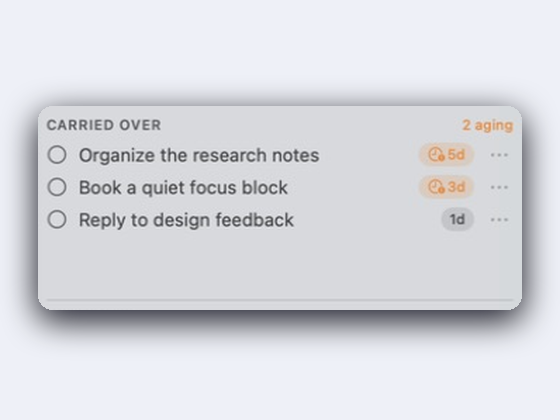
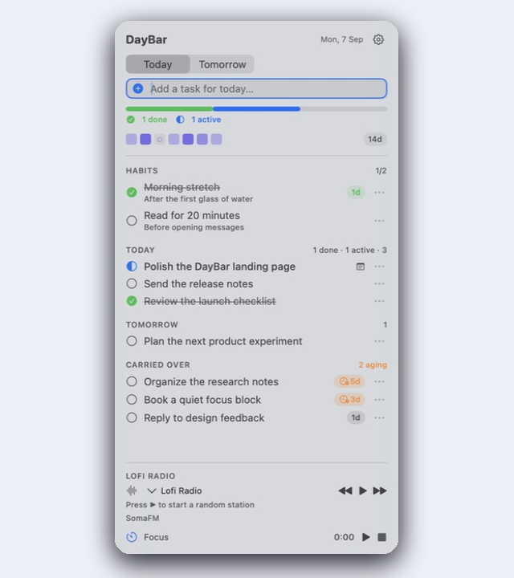
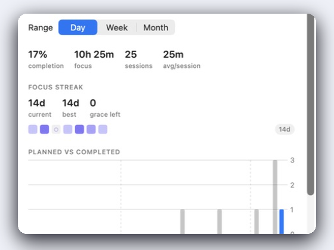
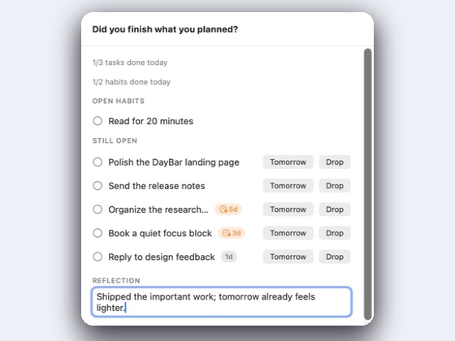

Gentle carry-over
Unfinished tasks roll into tomorrow and age quietly — grey to amber, plus a calm menu-bar count. Never a wall of red.

 DayBar for macOS
DayBar for macOS
A calm macOS menu-bar app for habits, todos, and Pomodoro focus — unfinished work carries into tomorrow with a gentle nudge, not a wall of red.

NativeLives in your menu bar
PrivateYour plan stays on your Mac
GentleCarry-over without alarm fatigue
Plan, focus, and close the loop without turning your day into a dashboard.
Unfinished tasks roll into tomorrow and age quietly — grey to amber, plus a calm menu-bar count. Never a wall of red.

Watch your week fill with quiet ink as Pomodoros finish — a calm focus streak with one grace day, never a harsh reset.

Ask “Did you finish what you planned?” — triage what’s left, jot a one-line reflection, and optionally tag your mood.

There is no account or setup wizard. Just the app, where you expect it.
Get the latest DayBar-vX.Y.Z-macOS.zip from Releases.
Extract the archive and drag DayBar.app into Applications.
In Finder, right-click DayBar.app → Open → confirm Open. Release builds are ad-hoc signed, so Gatekeeper may warn on first launch.
Remove the quarantine flag, then open the app:
xattr -cr /Applications/DayBar.app
open /Applications/DayBar.appLook for the icon in the menu bar — there is no Dock icon.
Your plan stays on your Mac with SwiftData. Optional mood suggestions use on-device Apple Intelligence when available; nothing leaves the machine.